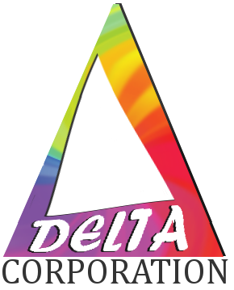

- CEO: Matthew Haddad
- Ethan Dalool
- Micah Monticello
- Ian Atol
- Vanessa Martinez
1/26/18
Matthew:
- Refined cooking website user interface
- Next, refine cooking website user interface further
Ethan:
- Improved appearance of Scrumlog page
- Next, starte designing OO database and queries
Micah:
Ian:
- Worked on schema outline
- Next, research cooking sites for potential features
Vanessa:
- Familiarized with Python and Flask
- Next, familiarize further with Python and Flask
1/25/18
Matthew:
- Added slight refinements to company website
- Next, refine cooking website user interface
Ethan:
- Wrote schema for user type
- Next, improve appearance of Scrumlog page
Micah:
Ian:
- Familiarized with Python and Flask
- Next, log potential SQL queries
Vanessa:
- Familiarized with Python and Flask
- Next, familiarize further with Python and Flask
1/24/18
Matthew:
- Worked on refining website more (logo, formatting)
- Next, add animations to website
Ethan:
- Wrote instructions for adding components to backend and website
- Next, write attribute list and suggested schema for profiles
Micah:
Ian:
- Began incorporating recipe struct into schema
- Next, continue incorporating recipe struct into schema
Vanessa:
- Familiarized with Python and Flask
- Next, familiarize further with Python and Flask
1/23/18
Matthew:
- Worked on refining website
- Next, keep refining website more
Ethan:
- Added setup instructions for site template
- Next, write instructions for adding modules
Micah:
- Organized database data structures
- Next, develop CSS and style for GitHub
Ian:
- N/A
- Next, incorporate recipe struct into schema
Vanessa:
- N/A
- Next, familiarize with Python
1/22/18
Matthew:
- Worked on preliminary UI
- Next, refine and enhance UI
Ethan:
- Worked on a repository
- Next, documentation for template
Micah:
- Did preliminary research on recipe sites
- Next, add more attributes to schema
Ian:
- Created a sample schema
- Next, incorporate recipe struct into schema
Vanessa:
1/19/18
Matthew:
Ethan:
Micah:
- Preliminary research on recipe sites
Ian:
Vanessa: